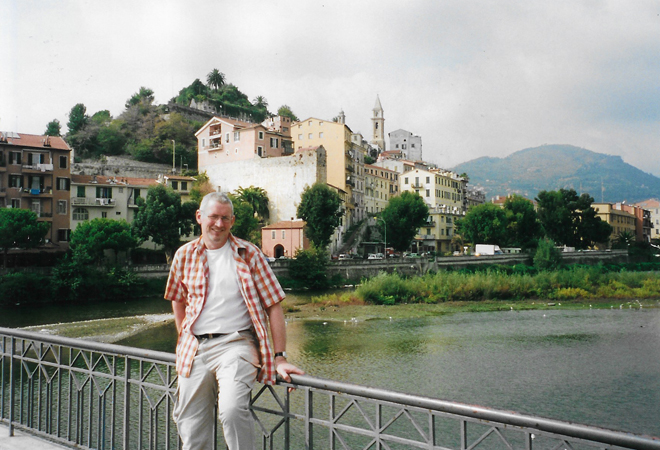
Another visit to Ventimiglia - this time in October (I had always been in high Summer in the past) and the weather was noticeably cooler and many of the tourist restaurants had closed for the season.
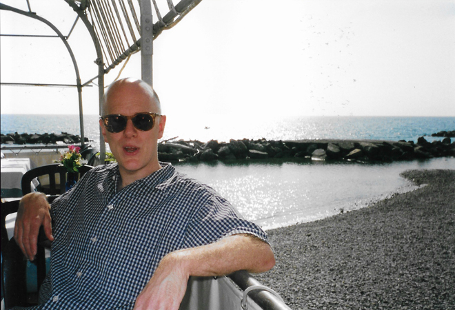
However, we did have a couple of days when the temperature was still plenty warm enough to sit on the beach and eat out at lunchtime.
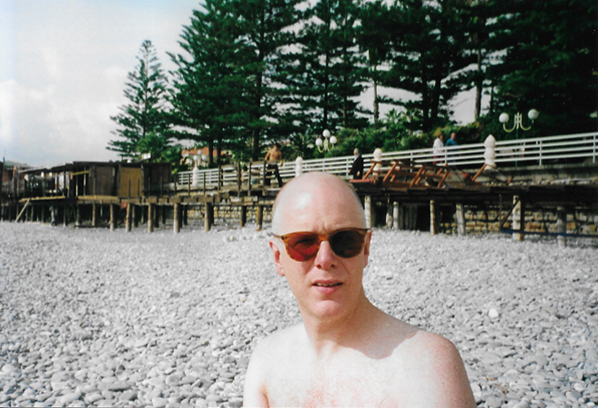
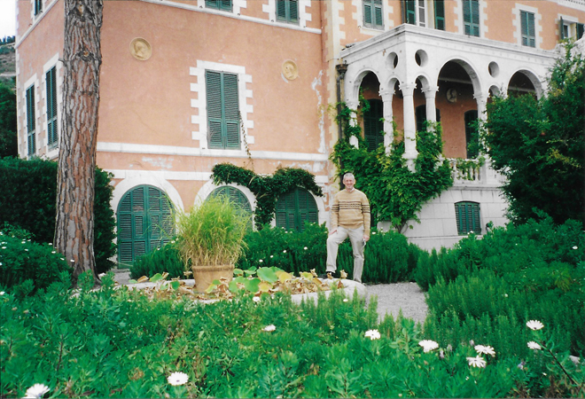
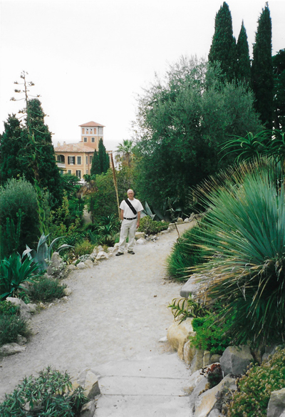
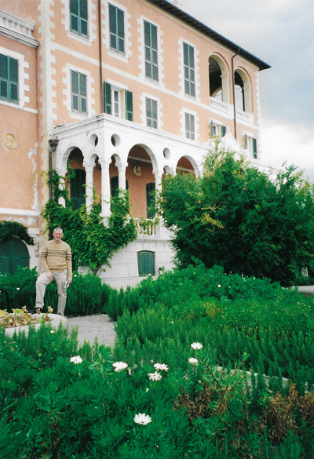
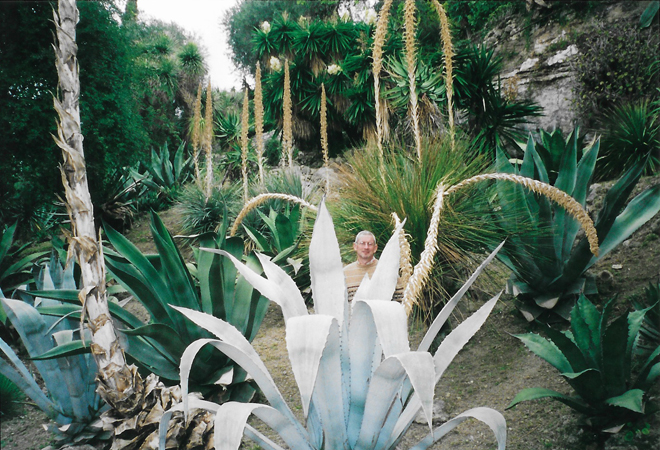
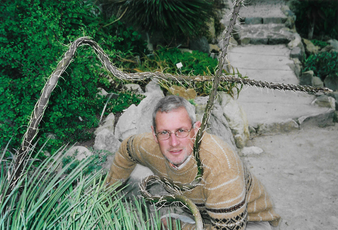
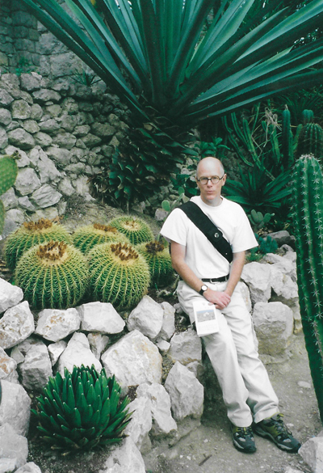
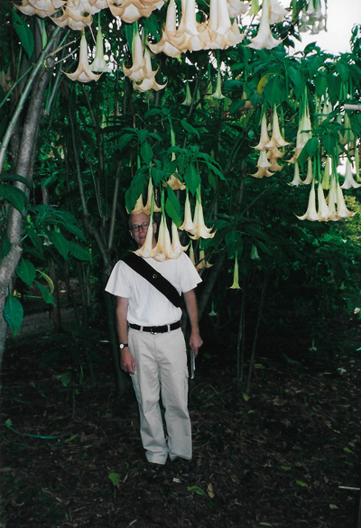
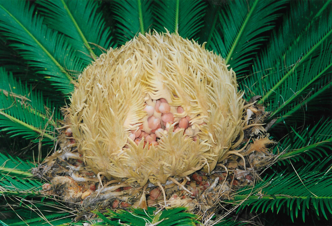
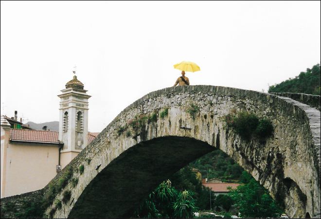
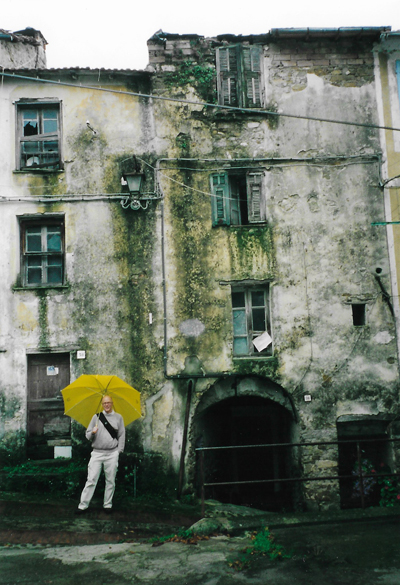
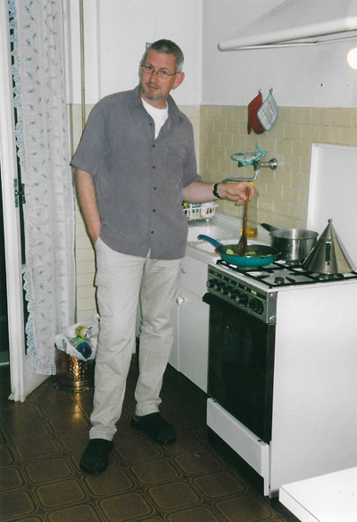
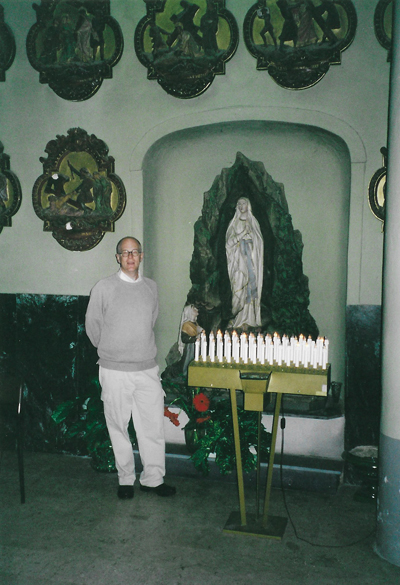
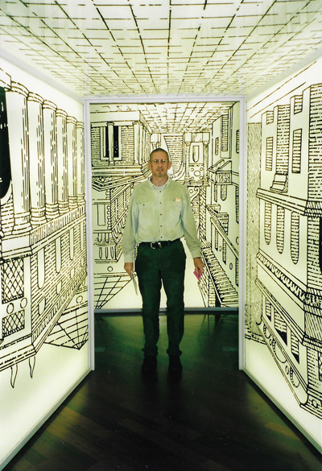
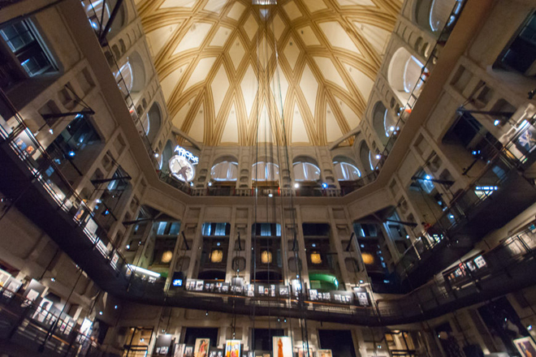
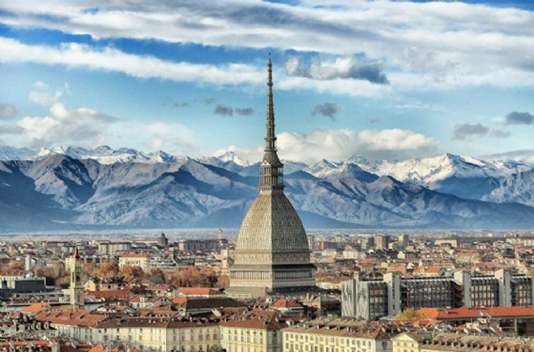